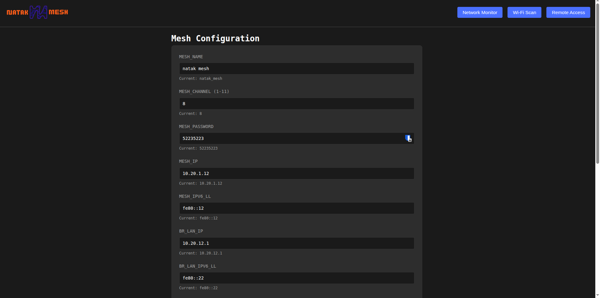
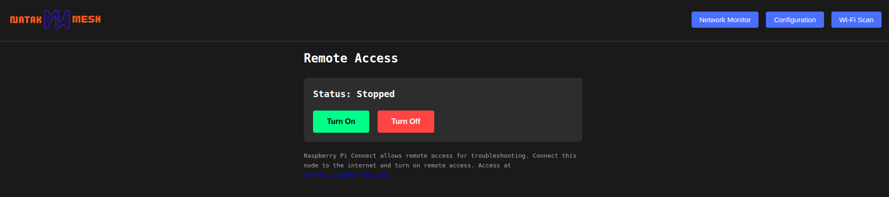

Nucleus V1 User Manual
Table of Contents
Initial Setup
Getting Started
Simply plug your Nucleus node into power to start it up. After about 1 minute, the node's WiFi access point will come online as takNodeN (or equivalent based on your configuration).
Connect Your Device
Connect to the takNodeN WiFi network using the provided password. The node's onboard DHCP server will automatically assign your device an IP address and connect it to the WiFi mesh network.
What's Ready to Use
WiFi Mesh: Works immediately. Multiple nodes automatically form a mesh network.
Web Interface & Monitoring
Access the built-in web interface by opening your browser and navigating to your node's IP address on port 5000 (e.g., 10.20.12.1:5000).
Network Monitor
Each connected node displays a card showing:
- Mesh interface IP address
- Link cost (lower is better)
- Time connected
- WiFi connection statistics including estimated throughput in Mbps
Configuration
All configuration options are managed through the web interface.
WiFi Scan
The WiFi scan uses the mesh interface to scan available 2.4 GHz channels to determine how congested they are. If operating in an area with extensive RF noise, this helps you select the least used channel for the mesh.
Important notes:
- This scan only detects WiFi access points, not mesh points, bluetooth, jamming, etc. - this is not a complete picture of the RF spectrum
- The mesh connection will be brought down for the duration of the scan
Remote Access
Remote access allows you to turn on rpi-connect. This has been pre-configured to connect back to the Natak infrastructure to allow remote troubleshooting and updating when activated and connected to an internet-accessible device.
Nucleus V1.2 Additional Features
The following features are exclusive to the Nucleus V1.2 model.
Hardware Additions
Nucleus V1.2 includes additional hardware capabilities beyond the base Nucleus platform:
- Dedicated Meshtastic LoRa radio module
- Ethernet port for wired connectivity
- Enhanced processing power for TAK Server operation
Meshtastic LoRa Radio
The Meshtastic radio receives power in parallel with the WiFi radio and works like any standard Meshtastic device:
Features
- Range up to several kilometers
- Works with any Meshtastic device
- Connects to other Meshtastic users
- Low power, long range backup communication
Setup
- Pair your Meshtastic mobile app to the radio
- Configure radio settings for your area and requirements
- Enable the ATAK Meshtastic plugin if you want ATAK integration over LoRa
ATAK over LoRa
- Uses the standard Meshtastic ATAK plugin
- Works alongside WiFi connections
- Connects Nucleus V1.2 users with Meshtastic-only users
- Text, markers, and location sharing
- Long-range backup when WiFi is out of range
Meshtastic Official App
- Use the standard Meshtastic mobile app
- Connects over the Meshtastic radio
- Text messaging and location sharing
- Works with other Meshtastic devices
Ready to Use
Meshtastic Radio: Requires configuration through the Meshtastic app for your specific location and use case.
TAK Server Integration
Pre-Installed Software
Every Nucleus V1.2 node comes with TAK Server 5.3 and MediaMTX pre-installed but not activated or configured:
- TAK Server 5.3 - Latest version installed but requires activation and configuration
- MediaMTX - Video streaming server installed but requires setup
- Configuration Options:
- Self-configure and activate after purchase
- Pre-configured and activated option available during purchase
TAK Server Features
The pre-installed TAK Server provides:
- Centralizes ATAK user connections
- Stores and forwards data when users are offline
- Manages user authentication and groups
- Works over the WiFi mesh network
- Supports video streaming via MediaMTX integration
Benefits of TAK Server
- Persistent Data - Messages and map data saved even when users disconnect
- User Management - Control who can connect and what they can see
- Reliable Connections - Single connection point instead of peer-to-peer
- File Sharing - Upload and download files through the server
- Video Streaming - Stream live video feeds between connected ATAK users via MediaMTX
Ethernet Connectivity
Nucleus V1.2 includes an Ethernet port for wired connectivity:
- Connect directly to the node's Ethernet port
- Automatic IP assignment via onboard DHCP server
- Full access to mesh network via wired connection
- Reticulum network access over Ethernet
- Bridge mesh connection to the internet via Ethernet uplink
- Ideal for stationary devices or server connections